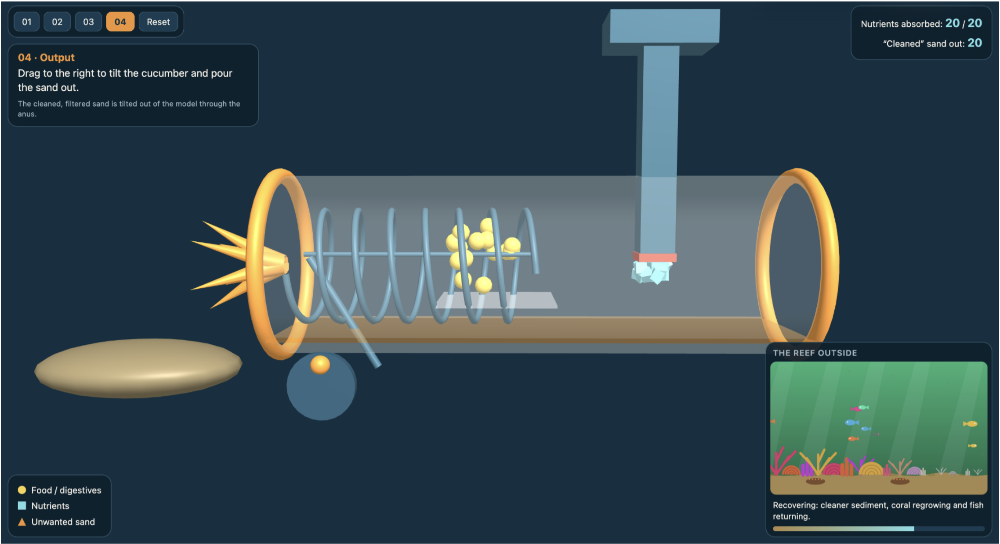
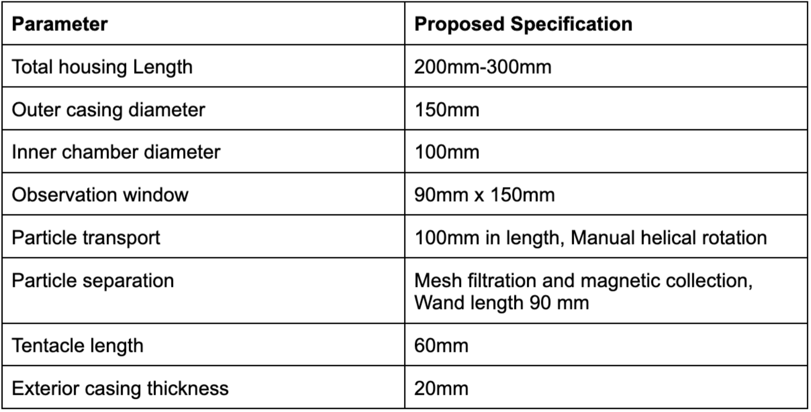
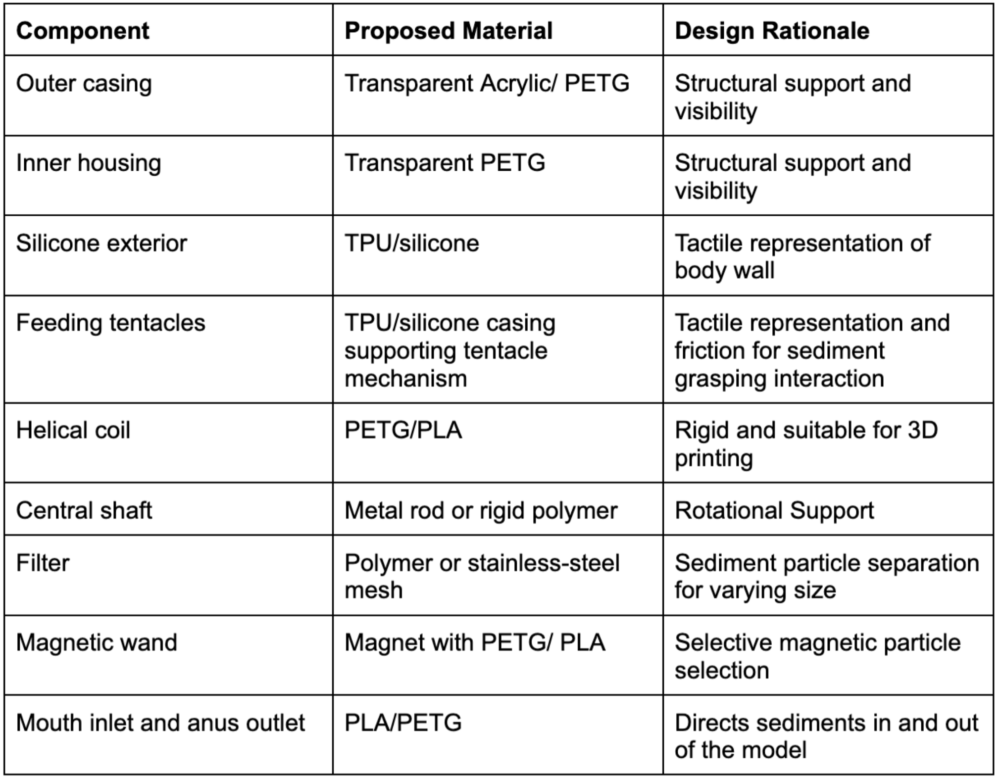
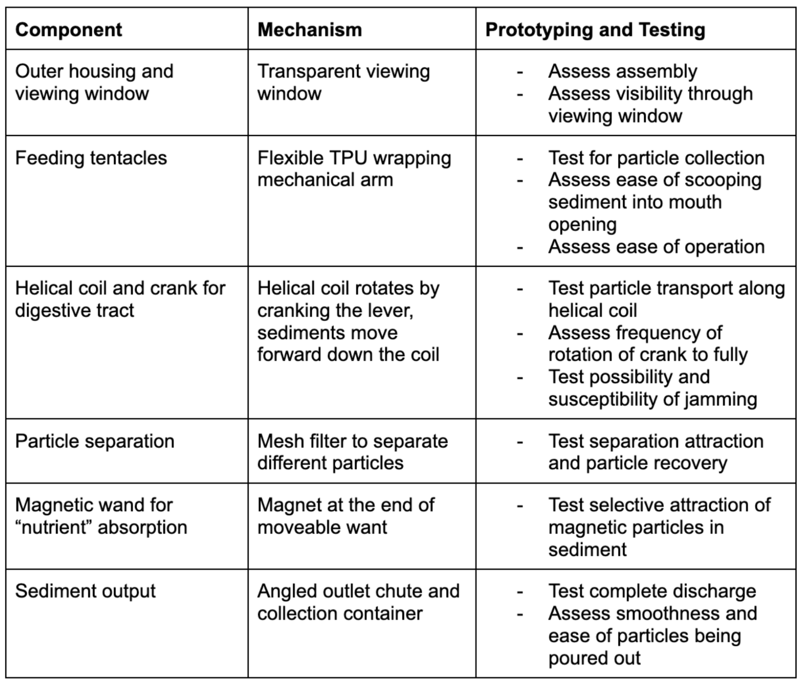
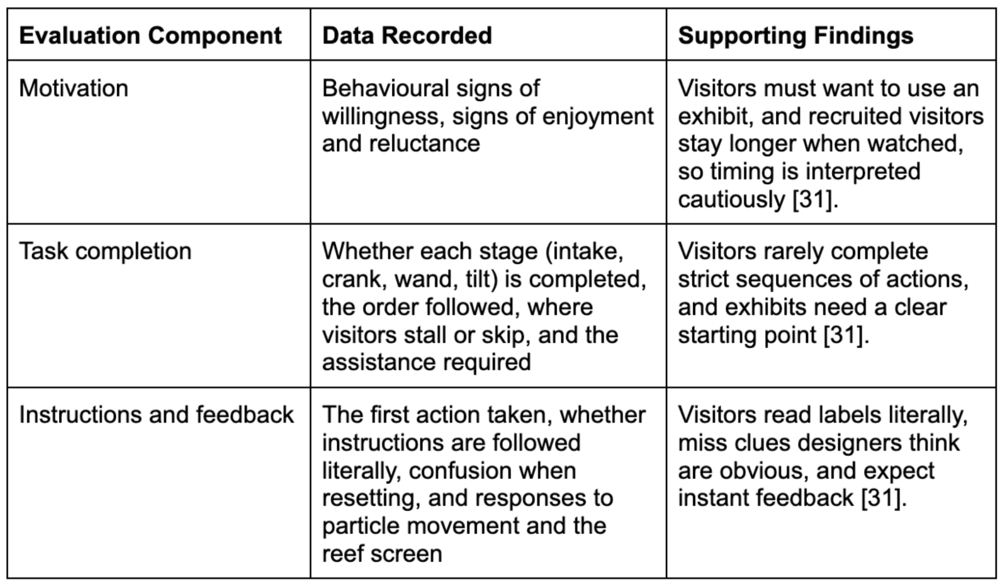
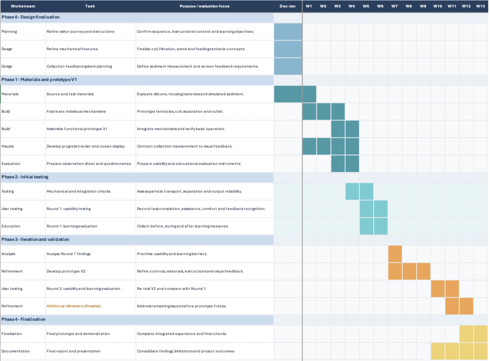
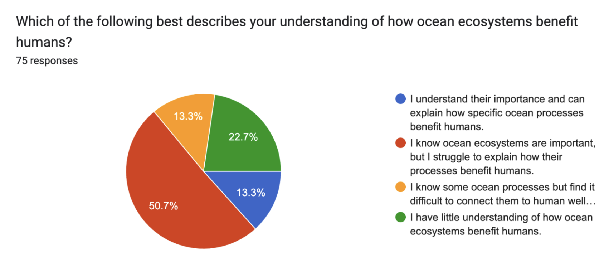
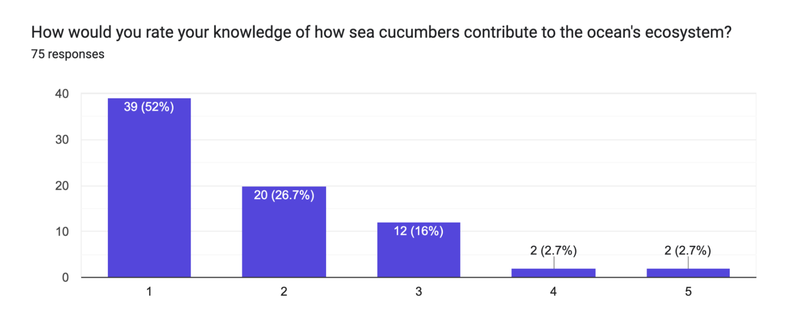
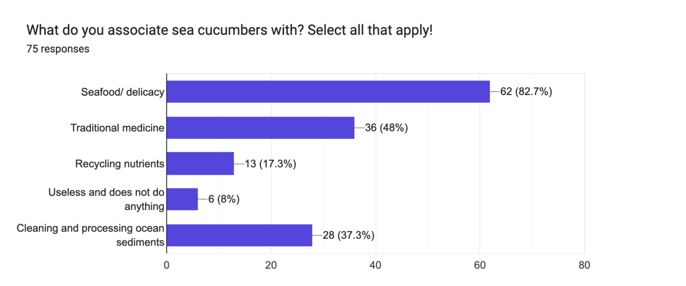
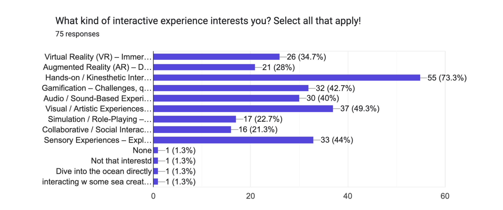

Understanding Our Ocean: CuCuWorks
1. Introduction and Background
1.1 Project Background
The ocean plays a vital role in sustaining life on Earth through ecological processes and interactions between marine organisms and their environments, many of which remain largely invisible to the public [1].
Public awareness of marine organisms does not necessarily translate into an understanding of their ecological functions. Lesser-known organisms, for example the sea cucumber, perform important roles in maintaining ocean ecosystem health but are often recognised primarily for their commercial value rather than their ecological contributions [2], [3].
Understanding Our Ocean aims to address this knowledge gap by developing an interactive educational experience that makes marine ecological processes more accessible. This is because interactive learning experiences provide an opportunity to allow participants to understand ocean knowledge effectively [4]. This project aims to communicate ecological processes that are difficult to observe directly, using physical interaction and play, using the sediment-processing function of sea cucumbers [5].
1.2 Project Partners: OceanX and LKCNHM
OceanX is a nonprofit ocean exploration and media organisation that combines scientific research, storytelling and immersive experiences to advance ocean discovery and public engagement. Its mission includes making marine science accessible and inspiring younger generations to develop an interest in ocean conservation [6].
The Lee Kong Chian Natural History Museum (LKCNHM) complements these objectives through biodiversity research, exhibitions and educational programmes [7]. The museum contributed to OceanX's 2025 Into the Deep: Monsoon Rise expedition [8], which documented marine biodiversity, including lesser-known organisms such as deep-sea crabs and sea cucumbers.
Together, these organisations provided the scientific and educational context for our project. OceanX demonstrated the importance of engaging storytelling, while LKCNHM highlighted the need to translate scientific discoveries into accessible learning experiences, particularly for younger audiences.
1.3 Importance of Ocean Literacy
Ocean literacy refers to understanding the ocean's influence on humans and vice versa. An important aspect is recognising how marine organisms contribute to ecological processes that maintain healthy marine ecosystems [9], [10].
However, many of these processes, such as sediment processing and nutrient recycling, are difficult to observe directly. This creates a gap between public awareness of marine organisms and understanding of their ecological functions, highlighting the need for more accessible approaches to ocean education [11], [12].
2. Primary Research and Stakeholder Engagement
Primary research was conducted through meetings with stakeholders, workshops and a public survey to understand educational needs, identify knowledge gaps and inform the project's design direction.
2.1. Meeting with LKCNHM Curators
We engaged with LKCNHM curators, who shared insights from the Monsoon Rise expedition [8], including research involving deep-sea crabs, lantern sharks and sea cucumbers [13].
The discussion highlighted the diversity of lesser-known marine organisms and the museum's role in translating biodiversity research into educational experiences. Schoolchildren were identified as an important audience through the museum's educational programmes.
These insights encouraged us to focus on an unfamiliar marine organism with a meaningful ecological function. Sea cucumbers emerged as a promising subject because their feeding and sediment-processing mechanisms were lesser-known, and had potential to be transformed into a hands-on experience.
2.2. Storytelling Workshop with James Honeyborne
The team participated in a storytelling workshop with James Honeyborne, known for his work on BBC's Blue Planet II [14].
Our key learnings from the workshop and speaking to Mr Honeyborne were that we should focus on:
- Audience-centred storytelling
- Emotional engagement
- The use of relatable marine organisms to communicate complex scientific concepts.
It also highlighted the importance of positive messaging that inspires curiosity and appreciation rather than focusing exclusively on environmental threats.
These findings influenced the decision to centre the experience around a single marine organism. Rather than simply presenting facts, the experience would allow visitors to discover an organism's ecological significance through their own actions [15].
2.3 Public Perception and User Needs Survey
A preliminary survey involving 75 respondents investigated public understanding of marine ecosystems, familiarity with sea cucumbers and preferred educational approaches [16].
2.3.1 Understanding of Ocean Processes
Only 13.3% of respondents could explain how specific ocean processes benefit humans, highlighting a gap between general awareness of ocean ecosystems and understanding of their ecological functions.
2.3.2 Familiarity with Sea Cucumbers
A majority of respondents (78.7%) rated their understanding of sea cucumbers' ecological contributions at 1 or 2 out of 5, indicating limited familiarity with their role in marine ecosystems.
While 82.7% associated sea cucumbers with seafood, only 17.3% associated them with nutrient recycling, highlighting greater awareness of their commercial uses than their ecological functions.
2.3.3 Preferred Educational Approaches
Hands-on/kinesthetic interaction was the most frequently selected approach (73.3%), followed by visual/artistic experiences (49.3%) and sensory experiences (44.0%).
3. Secondary Research and Literature Review
3.1 Ocean Literacy and Science Communication
Ocean literacy emphasises understanding the relationship between marine ecosystems and human societies [17]. However, many ecological processes, including sediment processing and nutrient cycling, occur beyond direct human observation [18].
Traditional educational approaches, including information panels, specimens and documentaries, provide valuable scientific information but may offer limited opportunities for visitors to physically experience the processes being described [19].
Interactive exhibits provide an opportunity to complement these approaches by allowing visitors to manipulate simplified representations of biological mechanisms and observe their effects [19], [20].
3.2 Active and Experiential Learning
Experiential learning emphasises knowledge development through direct experience and reflection [21].
Research by Freeman et al. [22] found that active learning improved student performance compared with traditional lectures across undergraduate STEM disciplines. Similarly, Deslauriers et al. [23] demonstrated that active participation can produce stronger measured learning outcomes even when students perceive passive instruction as more effective.
3.3 Learning in Museum Environments
Museum visitors have varying levels of prior knowledge, motivation and engagement. Educational experiences must therefore balance scientific accuracy with intuitive interaction and accessibility. Visitor observation research also highlights the relevance of dwell time and interaction patterns when evaluating exhibitions [24].
3.4 Summary of Secondary Research Findings
Secondary research supported the use of accessible, hands-on exhibits to communicate complex marine ecological processes, highlighting the educational benefits of active participation and intuitive interaction.
4. Problem Definition and Design Opportunity
4.1 Research Synthesis
Survey findings suggested limited understanding of ocean processes and meeting industry experts highlighted the importance of accessible science communication and engaging storytelling. Research into experiential learning further supported exploring physical participation as an educational approach [21], [22]
4.2 Root Causes of the Knowledge Gap
Three key factors contribute to the identified ocean literacy gap:
- Limited visibility: Marine ecological processes such as sediment processing and nutrient recycling are difficult to observe directly [18].
- Limited functional understanding: Familiarity with an organism does not necessarily translate into understanding its contribution to ecosystem health [25].
- Challenges in science communication: Abstract biological processes may be difficult for younger audiences to understand through textual or visual explanations alone. [19], [26]
4.3 Problem Statement
How might we use hands-on interactive experiences to help young visitors understand the ecological functions of marine organisms and recognise their importance to healthy ocean ecosystems?
4.4 Target Audience
The primary target audience comprises students and young museum visitors with varying levels of prior ocean knowledge. [26] The secondary audience includes families and curious visitors seeking accessible marine education.
The experience is therefore intended to be intuitive, engaging and scientifically meaningful without requiring extensive prior knowledge.
4.5 Design Opportunity and Proposed Direction
The identified opportunity is to transform the largely invisible process of sea cucumber sediment processing into a tangible educational experience.
Our proposed experience follows an Experience–Understand–Act framework, encouraging visitors to participate in the process, understand its ecological significance and develop greater appreciation for marine biodiversity.
4.6 Value Proposition
The proposed solution transforms invisible marine ecological processes into engaging, hands-on learning experiences, allowing visitors to explore and understand complex biological functions through physical interaction.
For young museum visitors, it makes marine science accessible, interactive and memorable. For museums and educators, it offers a reusable teaching tool that complements traditional exhibits.
By combining experiential learning with visual storytelling, the solution aims to turn passive observation into active discovery, inspiring greater appreciation for lesser-known marine organisms [19], [21].
5. Exploration and Selection of Marine Organisms
5.1 Initial Concept Exploration
Following the meetings with subject-matter experts, we explored three potential educational directions: deep-sea crabs, bioluminescence and sea cucumbers [13], [27]. Each was evaluated based on its ecological significance, potential for visitor engagement and suitability for translation into an interactive educational experience.
5.2 Narrowing Down: Sea Cucumbers
Sea cucumbers were selected out of the ideas we explored, based on three main considerations:
- Educational relevance: Their ecological functions address an identified gap in public understanding.
- Interaction potential: Feeding and sediment processing can be represented through sequential physical mechanisms.
- Conservation significance: The experience can encourage visitors to recognise their value beyond commercial consumption.
5.3 Biological Functions of Sea Cucumbers
Sea cucumbers are marine echinoderms related to sea stars and sea urchins [28]. Many species inhabit the seafloor, where deposit-feeding species contribute to sediment processing and organic matter recycling [28], [18].
Using specialised oral tentacles, deposit-feeding sea cucumbers collect sediment containing organic material [28]. As the material passes through their digestive system, digestible components are processed and nutrients absorbed, while undigested sediment is expelled [28], [29].
The sequential nature of these processes makes them particularly suitable for a hands-on educational model, where visitors can simulate feeding, transport, separation and output.
5.4 Ecological Importance and Conservation
Sea cucumbers play a very important role in the lives of humans. Their sediment-processing activities contribute to healthy ecosystem functioning. In one case, removing sea cucumbers from reefs increased coral tissue mortality by approximately 370%, highlighting their critical role in maintaining coral reef health [30]. Coral reefs provide essential habitats and breeding grounds for fish, meaning coral loss can reduce fish populations and threaten fisheries that support human food security [31]. This further highlights the ecological importance of sea cucumbers in maintaining healthy reef ecosystems.
Our survey indicated that respondents were considerably more familiar with sea cucumbers as seafood than with their ecological contributions [16]. This highlighted an opportunity to introduce visitors to their ecological importance and encourage greater appreciation of these organisms.
6. Design Brief
6.1 Design Objectives
The project aims to develop an interactive educational experience that communicates the ecological functions of sea cucumbers, focusing on their roles in sediment processing and nutrient recycling. The experience seeks to bridge the gap between visitors' factual awareness and a deeper understanding of marine ecological processes and their significance.
6.1.1 Objective 1 - Enhance Visitor Engagement
The experience aims to encourage active visitor participation through tangible interactions, making the learning experience more engaging.
This objective is informed by the project's preliminary survey findings on preferred educational approaches. These findings suggest an opportunity to develop a physically interactive exhibit that aligns with respondents' expressed preferences.
6.1.2 Objective 2 - Improve Understanding of Sea Cucumber Biological function and Ecological significance
The experience aims to help visitors understand the essential stages of sea cucumber feeding, sediment processing and nutrient recycling through simplified, observable representations of these processes. Beyond biological processes, visitors should also recognise how these processes contribute to marine ecosystem health and, consequently, the ecosystem services upon which humans depend.
6.2 Intended Experience and Outcomes
To guide the development of the experience, a 3 stage experiential framework was established. This framework outlines the intended progression from active participation to ecological understanding and more conservation-conscious attitudes and behaviours.
6.2.1 Intended Learning Experience
The proposed experience when using CuCuWorks follows three interconnected stages, experience, understand and act.
In the first 'Experience' stage, the educational experience should encourage visitors to actively participate in simplified representations of sea cucumber feeding and sediment processing. Through hands-on interactions, biological processes that are difficult to observe can be translated into tangible and engaging learning experiences.
In the 'Understand' stage, visitors should gain a better understanding of how sea cucumbers contribute to sediment processing, organic matter breakdown and marine ecosystem health.
This stage should therefore establish a clear connection between the biological processes being demonstrated and their wider ecological significance.
Lastly, in the 'Act' stage, visitors are encouraged to develop greater appreciation for these organisms beyond their role as seafood. This understanding aims to promote more conservation conscious behaviour.
6.2.2 Intended Learning Outcomes
The experience aims to encourage visitors to reconsider their perceptions of sea cucumbers as seafood, explore sustainable alternatives and make more informed seafood choices. Although long-term behavioural changes may be difficult to measure, user testing will assess visitors' understanding, attitudes and behavioural intentions.
6.3 Design Requirements
The table below describes our design requirements are supported by our objectives.
7. Concept Design
7.1 Concept Overview
CuCuWorks was conceptualised as an interactive educational experience comprising a handheld sea cucumber model and accompanying visual displays.
7.1.1 Model Concept
The model simulates four sequential stages of sea cucumber sediment processing. Through physical manipulation, users are encouraged to actively explore how sea cucumbers perform these biological functions.
To enhance tactile interaction, the model will feature a soft silicone exterior surrounding a rigid transparent housing. The silicone reflects the sea cucumber's soft body wall, while a viewing window allows users to observe sediment movement through the internal mechanisms. The feeding tentacles will also have a silicone exterior to further provide a biologically inspired interaction.
7.1.2 Accompanying Visual Concept
The first screen provides step-by-step instructions, while the second visualises improvements in ocean health. Together, these displays connect visitors' physical interactions with the ecological significance of sea cucumber activity.
7.2 Technical Design and Working Principles
The technical design of CuCuWorks translates selected anatomical structures and biological functions of sea cucumbers into simplified mechanical interactions. The proposed system is designed to guide users through a sequential sediment processing experience and provide opportunities to observe the movement and separation of sediment particles.
7.2.1 Anatomy-to-Model Mapping
To establish a connection between the physical model and sea cucumber biology, key anatomical structures were identified and mapped to corresponding mechanical components.
The various features are designed as physical analogies of sea cucumber physiology. The mapping serves as a guide for the mechanical design, ensuring that each interaction corresponds to a biological function rather than functioning solely as an isolated mechanical activity.
7.2.2 Working Principles and Visitor Journey
The proposed visitor journey consists of four sequential mechanical interactions. Throughout the experience, the display will provide brief instructions linking each mechanical action to its biological function.
Stage 1 is Sediment Intake. Users begin by collecting simulated sediment from the sediment container using the model's feeding tentacles. The proposed flexible silicone-covered tentacles mimic the grasping movements of sea cucumber oral tentacles, allowing users to introduce sediment particles into the model.
Stage 2 consists of Digestion and Sediment Processing. Users rotate a hand crank connected to the coil within the model. The rotating mechanism transports sediment particles through the simulated digestive tract, while a filtering component enables the separation of selected "digested" particles. This interaction provides a simplified representation of sediment processing during digestion.
Stage 3 is Nutrient Absorption. Users subsequently operate a magnetic wand to selectively attract magnetic "nutrient" particles from the sediment mixture. These particles allow users to observe a simplified analogy of nutrient absorption within the digestive tract.
Stage 4 is Sediment Output. Users tilt the model to discharge the remaining sediment through the outlet into a designated collection container. This completes the simulated digestive sequence and provides a visible representation of the sediment processed during the interaction.
At Stage 4, processed sediment will be deposited into a weighted collection container, with a progress bar indicating the amount collected. As more sediment is collected, the ocean visuals will gradually transition towards a healthier ecosystem with thriving corals, increased fish populations and reduced waste.
7.3 Mechanical Ideation and Design Iterations
The initial mechanical ideation focused on translating the four biological processes into physical interactions. Several mechanisms were considered and refined based on their biological representation, interactivity and feasibility. The accompanying sediment collection chamber was also refined to ensure accurate feedback for the accompanying visuals.
7.3.1 Digestive Mechanism
The initial concept involved a filter barrel to separate sediment particles. However, a rotating coil was subsequently proposed as its curved structure provided a closer visual representation of the sea cucumber's digestive tract while allowing particles to be transported through the model.
7.3.2 Nutrient Absorption
Initially, nutrient absorption was intended to be demonstrated through a tilting mechanism, where smaller particles would pass through a filter and be visualised through a transparent screen. However, as the filter did not provide one-way separation, the particles could return to their original compartment when the model was tilted back. Additionally, the screen required users to maintain a specific viewing orientation, restricting movement and diverting attention from the physical interaction.
The design was therefore revised to incorporate a magnetic wand, allowing for a simpler, more flexible and interactive representation of nutrient absorption. The magnetic wand enables users to selectively collect designated magnetic particles, providing a visible analogy of nutrient extraction.
7.3.3 Sediment Intake
Two intake mechanisms were considered, a button-activated electronic vacuum and a squeeze operated suction mechanism. While the latter offered a more tactile interaction, both mechanisms lacked biological representation, as sea cucumbers use their oral tentacles rather than suction to collect sediment.
The design is therefore being revised to explore a soft robotic tentacle mechanism that mimics the grasping movements of sea cucumber oral tentacles. The proposed tentacles will incorporate a flexible silicone covering over the mechanical structure to provide a more biologically representative feeding interaction.
7.3.4 Collection Feedback Pool
The open collection chamber was further refined to improve the reliability of sediment detection and prevent unintended visitor interactions. An initially open collection chamber could allow visitors to manually deposit unprocessed sediment or apply pressure to the weighing mechanism, resulting in inaccurate feedback. To address this, a transparent cover with a funnel-shaped opening was proposed, allowing processed sediment to enter while restricting direct access to the collection chamber. The weighing mechanism would also be concealed beneath the chamber to minimise interference with weight measurements.
7.4 Current Design Limitations
The preliminary design has three key limitations. Firstly, the mechanisms simplify sea cucumber physiology, requiring clear educational explanations to maintain scientific accuracy. Secondly, CAD models and digital simulations demonstrate intended interactions but do not verify mechanical performance or tactile experience. Lastly, material selection, particle handling, storage and resetting require further testing to ensure reliability and practicality in a museum environment.
These limitations inform the subsequent prototyping and testing strategy.
8. Prototyping and Testing Plan
The next phase will involve fabricating and testing individual mechanisms before integrating them into a functional CuCuWorks prototype. The minimum viable prototype (MVP) will prioritise the four sediment-processing stages, with the silicone exterior and digital feedback system incorporated during subsequent iterations.
8.1 Preliminary CAD Prototype
Preliminary computer-aided design (CAD) and digital simulation models were developed to visualise the proposed CuCuWorks concept and explore the arrangement of its internal mechanisms. The CAD model illustrates the overall structure of the handheld device, including the internal chamber, rotating helical coil, magnetic wand and sediment outlet.
Video 1. CuCuWorks CAD Model Simulation
8.2 Digital Simulation Prototype
A digital simulation was developed to demonstrate sediment intake, particle transport, nutrient separation and sediment output. Instructional steps, ocean visuals and a progress tracker illustrate the intended visitor experience before physical fabrication.

These preliminary models serve as a foundation for physical prototyping to evaluate mechanical functionality, material suitability and integration with the accompanying visuals.
8.3 Material Considerations for CuCuWorks
Material selection will focus on balancing mechanical functionality, transparency, tactile representation, durability and ease of fabrication. The proposed materials and engineering specifications are summarised in the tables below. These will guide initial fabrication and be refined based on component testing and system integration.


8.3.1 Sand Composition
The simulated sediment mixture must support particle transport, separation and discharge while maintaining clear biological representation. The proposed composition is indicated in the table below.
Material testing will evaluate particle size, shape and compatibility with the proposed mechanisms, particularly to minimise jamming, ensure effective separation and allow repeated reuse.
8.3.2 Accompanying Visuals and Feedback Integration
Prototyping of the visual feedback system will focus on integrating sediment detection with the accompanying digital display. Initial development will explore the use of weight measurements from the collection container to update the progress tracker and trigger changes in the ocean visuals.
Testing will focus on establishing reliable communication between the physical and digital components, including the responsiveness and accuracy. The visual progression will also be refined to ensure that changes in the marine environment appropriately communicate the ecological significance of sea cucumber activity.
8.4 Proposed Testing and Evaluation
The proposed testing strategy will evaluate both the technical functionality and educational effectiveness of CuCuWorks. Testing will be conducted progressively, beginning with individual mechanical components before moving towards system integration and user evaluation.
8.4.1 Mechanical Testing
Initial mechanical testing will focus on determining whether the proposed mechanisms can reliably perform their intended functions. The table below explains how each mechanism is tested and what it is tested for.

8.4.2 User Testing
User testing will evaluate the usability and interaction experience of CuCuWorks, particularly among the intended younger audience.
Testing will assess visitor motivation, usability and content understanding, with the aim of identifying and removing physical, emotional and intellectual barriers to engagement [32]. The table below summarises what will be recorded in each part of the observational evaluation and the research finding it is based on.

Observations will be recorded on a structured sheet matched to the exhibit's learning outcomes, and the prototype will be risk assessed before testing with the public. The findings will be used to identify underlying interaction barriers, rather than surface changes, and to guide design refinements.
8.4.3 Educational Evaluation
Educational evaluation will assess the effectiveness of CuCuWorks in communicating the biological functions and ecological significance of sea cucumbers through a before, during and after approach. The assessment draws on research into museum learning outcomes [33], UNESCO's Ocean Literacy framework for marine ecological understanding [34], and dwell time as an indicator of engagement [35].
Before the interaction, a short questionnaire will assess participants' baseline understanding of sea cucumber functions and marine ecological processes. During the interaction, observations will record engagement, interaction time and enjoyment. Recruited participants tend to stay longer and read more labels than natural visitors, so dwell time will be interpreted cautiously [32]. After the interaction, open-ended questions will assess understanding of sediment processing, ecological significance and conservation-related attitudes, with drawings or picture prompts to support younger participants [32].
The findings will evaluate immediate learning outcomes, engagement and behavioural intentions, while informing future design refinements.
8.5 Roadmap and Milestones
The proposed project timeline and key milestones are summarised in the Gantt chart below.

CuCuWorks development comprises five phases.
Phase 0: Design Finalisation focuses on refining the visitor journey, mechanical mechanisms and accompanying visual feedback system to establish a clear direction for physical development.
Phase 1: Material Exploration and Prototyping involves sourcing and testing suitable materials, fabricating individual mechanisms and integrating them into the first functional prototype (V1).
Phase 2: Initial Testing and Evaluation focuses on preparing evaluation instruments and conducting the first round of usability and educational testing to identify interaction difficulties and assess preliminary learning outcomes.
Phase 3: Iteration and Validation involves analysing feedback, refining the design and developing Prototype V2. A second round of testing will evaluate the effectiveness of these improvements, with further iterations conducted if necessary.
Phase 4: Finalisation focuses on completing the integrated prototype, consolidating evaluation findings and preparing the final report and presentation.
8.4 Expected Outcomes
By the end of the project, we aim to develop a functional CuCuWorks prototype that demonstrates the four stages of sea cucumber sediment processing through tangible mechanical interactions. Mechanical and user testing will evaluate the prototype's functionality, reliability and usability, while educational evaluation will assess visitors' understanding and appreciation of sea cucumbers.
We hope to integrate CuCuWorks into the Lee Kong Chian Natural History Museum's Monsoon Rise expedition outreach, translating scientific findings from the expedition into an interactive educational experience that promotes ocean literacy.
References
- [1] National Oceanic and Atmospheric Administration. (n.d.). Ocean and climate literacy. NOAA Ocean Service. https://oceanservice.noaa.gov/education/literacy.html
- [2] Purcell, S. W., Conand, C., Uthicke, S., & Byrne, M. (2016). Ecological roles of exploited sea cucumbers. Oceanography and Marine Biology: An Annual Review, 54, 367–386. Source
- [3] Purcell, S. W., et al. (2013). Sea cucumber fisheries: Global analysis of stocks, management measures and drivers of overfishing. Fish and Fisheries, 14(1), 34–59. https://doi.org/10.1111/j.1467-2979.2011.00443.x
- [4] Kolb, A. Y., & Kolb, D. A. (2005). Learning styles and learning spaces: Enhancing experiential learning in higher education. Academy of Management Learning & Education, 4(2), 193–212. https://doi.org/10.5465/amle.2005.17268566
- [5] Allen, S. (2004). Designs for learning: Studying science museum exhibits that do more than entertain. Science Education, 88(S1), S17–S33. https://doi.org/10.1002/sce.20016
- [6] OceanX. (n.d.). OceanX education. https://oceanx.org/
- [7] Lee Kong Chian Natural History Museum. (n.d.). Education. National University of Singapore. https://lkcnhm.nus.edu.sg/
- [8] National University of Singapore. (2025, October 8). Into the deep: NUS researchers set sail on 24-day mission with OceanX to study marine biodiversity. NUS News. https://news.nus.edu.sg/nus-researchers-set-sail-on-mission-with-oceanx
- [9] National Marine Educators Association. (2024). Ocean literacy: The essential principles and fundamental concepts of ocean sciences for learners of all ages (Version 3.2). Source
- [10] Uthicke, S. (2001). Nutrient regeneration by abundant coral reef holothurians. Journal of Experimental Marine Biology and Ecology, 265(2), 153–170. https://doi.org/10.1016/S0022-0981(01)00329-X
- [11] Fauville, G., Strang, C., Cannady, M. A., & Chen, Y.-F. (2019). Development of the International Ocean Literacy Survey: Measuring knowledge across the world. Environmental Education Research, 25(2), 238–263. https://doi.org/10.1080/13504622.2018.1440381
- [12] Lindoso, V. F. G., Hart, N., & Christofoletti, R. A. (2026). From education to engagement: Rethinking ocean literacy through strategic communications. In Ocean literacy: The foundation for the success of the Ocean Decade (Vol. III, pp. 25–39). Springer. https://doi.org/10.1007/978-3-032-14477-5_2
- [13] Lee Kong Chian Natural History Museum. (2025, November 5). Mission complete! OceanX–NUS Into the Deep: Monsoon Rise. National University of Singapore. https://lkcnhm.nus.edu.sg/mission-complete-oceanx-nus-into-the-deep-monsoon-rise/
- [14] Netflix. (2019, January 30). Netflix announces multi-year overall deal with James Honeyborne. Source
- [15] Finisterre. (2021, June 17). How storytelling can inspire change | #SeaOurFuture. Source
- [16] CDE4301 CuCuWorks Team. (2026). Public perception and user needs survey on marine ecosystems and educational approaches National University of Singapore. View survey results
- [17] National Marine Educators Association. (2024). Ocean literacy: The essential principles and fundamental concepts of ocean sciences for learners of all ages (Version 3.2). Source
- [18] Uthicke, S. (2001). Nutrient regeneration by abundant coral reef holothurians. Journal of Experimental Marine Biology and Ecology, 265(2), 153–170. Source
- [19] Allen, S. (2004). Designs for learning: Studying science museum exhibits that do more than entertain. Science Education, 88(S1), S17–S33. Source
- [20] Maggipinto, B., et al. (2025). Diving into the abyss: Exploring deep sea connection and curiosity through virtual reality. In Proceedings of the 2025 CHI Conference on Human Factors in Computing Systems (Article 770). https://doi.org/10.1145/3706598.3713833
- [21] Kolb, A. Y., & Kolb, D. A. (2005). Learning styles and learning spaces: Enhancing experiential learning in higher education. Academy of Management Learning & Education, 4(2), 193–212. Source
- [22] Freeman, S., Eddy, S. L., McDonough, M., Smith, M. K., Okoroafor, N., Jordt, H., & Wenderoth, M. P. (2014). Active learning increases student performance in science, engineering, and mathematics. Proceedings of the National Academy of Sciences, 111(23), 8410–8415. https://doi.org/10.1073/pnas.1319030111
- [23] Deslauriers, L., McCarty, L. S., Miller, K., Callaghan, K., & Kestin, G. (2019). Measuring actual learning versus feeling of learning in response to being actively engaged in the classroom. Proceedings of the National Academy of Sciences, 116(39), 19251–19257. https://doi.org/10.1073/pnas.1821936116
- [24] Serrell, B. (1998). Paying attention: Visitors and museum exhibitions. American Association of Museums.
- [25] Fauville, G., Strang, C., Cannady, M. A., & Chen, Y.-F. (2019). Development of the International Ocean Literacy Survey: Measuring knowledge across the world. Environmental Education Research, 25(2), 238–263. Source
- [26] Falk, J. H., & Dierking, L. D. (2013). The museum experience revisited. Left Coast Press.
- [27] CDE4301 Project Team. (2026). Initial concept exploration: Deep-sea crabs, bioluminescence, and sea cucumbers [Unpublished project documentation]. National University of Singapore.
- [28] Pierrat, J., Bédier, A., Eeckhaut, I., Magalon, H., & Frouin, P. (2022). Sophistication in a seemingly simple creature: A review of wild holothurian nutrition in marine ecosystems. Biological Reviews, 97(1), 273–298. https://doi.org/10.1111/brv.12799
- [29] Pasquini, V., et al. (2023). Outcomes of feeding activity of the sea cucumber Holothuria tubulosa on quantity, biochemical composition, and nutritional quality of sedimentary organic matter. Frontiers in Marine Science, 9, Article 1010014. https://doi.org/10.3389/fmars.2022.1010014
- [30] Clements, C. S., Pratte, Z. A., Stewart, F. J., & Hay, M. E. (2024). Removal of detritivore sea cucumbers from reefs increases coral disease. Nature Communications, 15, Article 1338. https://doi.org/10.1038/s41467-024-45730-0
- [31] National Oceanic and Atmospheric Administration. (n.d.). Why are coral reefs important? NOAA Ocean Service. Source
- [32] Davis, S., & Audience Research and Advocacy Group. (2007). Lessons from Launchpad: Prototype testing. Science Museum.
- [33] Hooper-Greenhill, E., Dodd, J., Moussouri, T., Jones, C., Pickford, C., Herman, C., Morrison, M., Vincent, J., & Toon, R. (2003). Measuring the outcomes and impact of learning in museums, archives and libraries: The Learning Impact Research Project end of project paper. Research Centre for Museums and Galleries, University of Leicester.
- [34] UNESCO Ocean Literacy. (n.d.). About ocean literacy. https://oceanliteracy.unesco.org/about
- [35] Serrell, B. (1997). Paying attention: The duration and allocation of visitors' time in museum exhibitions. Curator: The Museum Journal, 40(2), 108–125. https://doi.org/10.1111/j.2151-6952.1997.tb01292.x
Appendix
Appendix A: Survey Findings
A preliminary survey involving 75 respondents was conducted to investigate public understanding of marine ecosystems, familiarity with sea cucumbers, and preferences for educational experiences. The complete survey results are accessible through the link below.
Understanding of Ocean Processes

Familiarity with Sea Cucumbers


Preferred Educational Approaches

Appendix B: CAD Models
The CAD models document the development and refinement of the CuCuWorks design. Both versions are provided to illustrate the design iteration process.
Version 1 (V1)
Download CuCuWorks CAD Model - V1 (.stl)
Version 2 (V2)
Download CuCuWorks CAD Model - V2 (.stl)